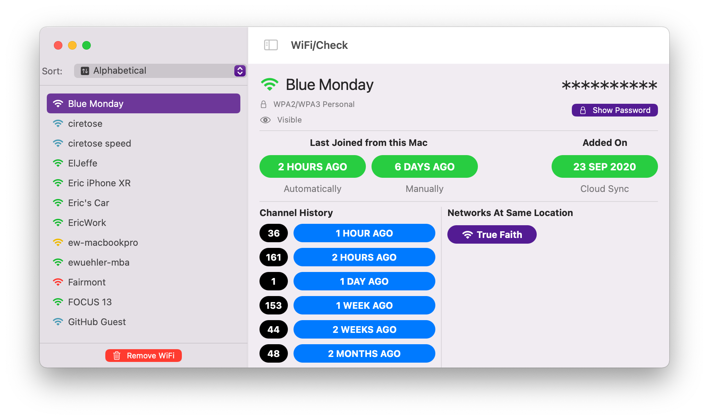

WiFi/Check
WiFi/Check is a simple app that displays information about the WiFi connections
made from your Mac. In the upgrade from Big Sur to Monterrey, Apple changed the
permissions on the data file - so it now requires a password to access and any
modifications to the file will require a password to make the change. This also
uses the command line utility - networksetup - for reading preferred order
and to remove a WiFi network from the list and if you want to see the password for
the WiFi Network stored in your Keychain, it will prompt for a password there, too.
I built this mostly as an exercise to learn SwiftUI and scratch an itch, runs on Big Sur and Monterrey.

SHA1: f145d0f4661df4d98fdc33b2d473826ae12b25bb
SHA256: d6cef7b581925788011f5810a880078e8690a425f5019b5f6eaf2e1951ab9077
SHA256: d6cef7b581925788011f5810a880078e8690a425f5019b5f6eaf2e1951ab9077
PS: You can validate the hash of the download using Hash/Check.
© 2021 ciretose